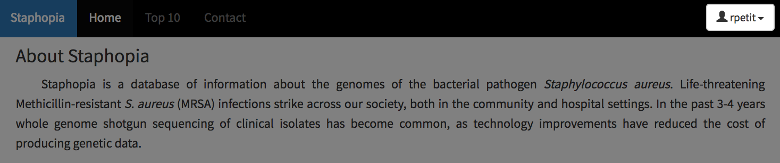
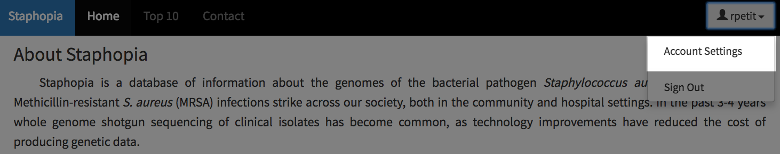
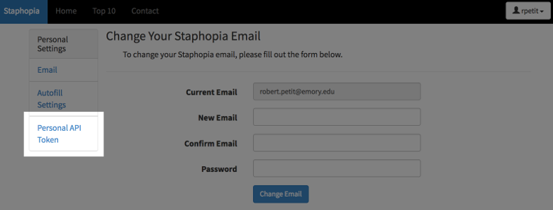
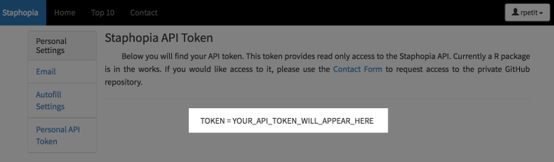

Introduction
Staphopia is a web platform for the bioinformatic analysis of publicly available Staphylococcus aureus genomes. We process each genome through the same analysis pipeline, allowing comparable results between samples. These results are then stored in a centralized database.
Analyses Include:
- Sequence quality control
- Assembly
- Sequence typing
- SCCmec typing
- Gene prediction and annotation
- 31-mer counting
- Variant calling
The Staphopia API provides a simple way access the results these results.
Authentication
In order to use the Staphopia API, you must first register an account with Staphopia. Once you have registered an account you will receive an API Token. The API token provides read-only access to the API. You can not make any changes to your account or the database with the token.
Acquiring Your API Token
First you will want to navigate to Staphopia. Once you get there go ahead and login.
Now that you’ve logged in you will see a button in the top right hand corner with your username.

Click it and select Account Settings.

From there you will want to select Personal API Token.

The next page will display your API token used to access Staphopia’s API.

With this API token you are all set to begin using the Staphopia API!
Samples
In Staphopia, a sample is a single sequenced genome. In the case of genomes publicly available from ENA/SRA, each exeriment accession is a sample. The sample is the central identifier in Staphopia. You will use sample IDs to gather associated analysis results.
In most cases you can use a simple GET request to get info on a single sample or POST requests to get info on multiple samples. In the cases where sequences (assembly, genes, etc…) are returned the requests will be limited to a single sample at a time.
Below are endpoints to access samples. Methods to access analysis results for a single sample and multiple samples will be described in following sections.
GET All Samples
Definition
GET https://staphopia.emory.edu/api/sample/
Example Request
curl -H "Authorization: Token YOUR_API_TOKEN_HERE" https://staphopia.emory.edu/api/sample/
Example Response
{
"count": 18521,
"next": "https://staphopia.emory.edu/api/sample/?page=2",
"previous": null,
"results": [
{
"sample_id": 2425,
"is_paired": true,
"is_public": true,
"is_published": true,
"sample_tag": "ERX359411",
"st_original": "188",
"st_stripped": 188,
"st_is_exact_match": true
}
]
}
Returns a list of samples that either you own or have been made public. The resulting set can be filtered by sequence types.
Options
| Option | Type | Description |
|---|---|---|
| st | int | Filter the samples based on a specific sequence type. |
GET Public Samples
Definition
GET https://staphopia.emory.edu/api/sample/public/
Example Request
curl -H "Authorization: Token YOUR_API_TOKEN_HERE" https://staphopia.emory.edu/api/sample/public/
Example Response
{
"count": 18521,
"next": "https://staphopia.emory.edu/api/sample/public/?page=2",
"previous": null,
"results": [
{
"sample_id": 94,
"is_paired": true,
"is_public": true,
"is_published": true,
"sample_tag": "ERX047891",
"st_original": "2371",
"st_stripped": 2371,
"st_is_exact_match": true
}
]
}
Returns a list of samples that have been made public.
GET Published Samples
Definition
GET https://staphopia.emory.edu/api/sample/published/
Example Request
curl -H "Authorization: Token YOUR_API_TOKEN_HERE" https://staphopia.emory.edu/api/sample/published/
Example Response
{
"count": 5947,
"next": "https://staphopia.emory.edu/api/sample/published/?page=2",
"previous": null,
"results": [
{
"sample_id": 5666,
"is_paired": true,
"is_public": true,
"is_published": true,
"sample_tag": "ERX116914",
"st_original": "8",
"st_stripped": 8,
"st_is_exact_match": true,
"pmid": [
26873713
]
}
]
}
Returns a list of samples that have been associated with a publication.
GET MLST Distinct Sample Set
Definition
GET https://staphopia.emory.edu/api/sample/unique_st/
Example Request
curl -H "Authorization: Token YOUR_API_TOKEN_HERE" https://staphopia.emory.edu/api/sample/unique_st/
Example Response
{
"count": 417,
"next": null,
"previous": null,
"results": [
{
"sample_id": 961,
"st": 1,
"is_paired": true,
"is_public": true,
"is_published": true,
"sample_tag": "ERX147839",
"rank": 3
}
]
}
Returns a set up samples each having a different seqeunce type (MLST). The priority is to select published samples first, then quality of the sample.
GET Single Sample
Definition
GET https://staphopia.emory.edu/api/sample/<sample_id>/
Example Request
curl -H "Authorization: Token YOUR_API_TOKEN_HERE" https://staphopia.emory.edu/api/sample/500/
Example Response
{
"count": 1,
"next": null,
"previous": null,
"results": [
{
"sample_id": 500,
"is_paired": true,
"is_public": true,
"is_published": true,
"sample_tag": "ERX105420",
"st_original": "239",
"st_stripped": 239,
"st_is_exact_match": true
}
]
}
Returns a single sample which is public or that you own. An empty result will be returned if a request is made for a sample which is not public.
Arguments
| Property | Type | Required | Description |
|---|---|---|---|
| sample_id | int | true | Unique number associated with a sample. |
Working With A Single Sample
GET Tags
Definition
GET https://staphopia.emory.edu/api/sample/<sample_id>/tags/
Example Request
curl -H "Authorization: Token YOUR_API_TOKEN_HERE" https://staphopia.emory.edu/api/sample/2786/tags/
Example Response
{
"count": 1,
"results": [
{
"sample_id": 2786,
"tag_id": 10,
"tag": "unique-st-set",
"comment": "A set of ENA samples, each of which have a different ST. Priority is published over unpublished samples, and Gold rank samples over other. Samples with > 90k variants were excluded. Set was last generated on 5/30/17 (407 samples)"
}
]
}
Returns a list of tags associated with a given sample_id.
Arguments
| Property | Type | Required | Description |
|---|---|---|---|
| sample_id | int | true | Unique number associated with a sample. |
GET Metadata
Definition
GET https://staphopia.emory.edu/api/sample/<sample_id>/metadata/
Example Request
curl -H "Authorization: Token YOUR_API_TOKEN_HERE" https://staphopia.emory.edu/api/sample/2786/metadata/
Example Response
{
"count": 1,
"results": [
{
"sample_id": 2786,
"contains_ena_metadata": true,
"study_accession": "PRJEB2655",
"study_title": "Diversity_of_MRSA",
"study_alias": "Diversity_of_MRSA-sc-2011-08-22T15:47:08Z-1943",
"secondary_study_accession": "ERP000871",
"sample_accession": "SAMEA2298736",
"secondary_sample_accession": "ERS391194",
"submission_accession": "ERA312487",
"experiment_accession": "ERX470731",
"experiment_title": "Illumina HiSeq 2000 paired end sequencing",
"experiment_alias": "SC_EXP_12291_8#37",
"tax_id": 1280,
"scientific_name": "Staphylococcus aureus",
"instrument_platform": "ILLUMINA",
"instrument_model": "Illumina HiSeq 2000",
"library_layout": "PAIRED",
"library_strategy": "WGS",
"library_selection": "RANDOM",
"center_name": "Sanger Institute",
"center_link": "http://www.sanger.ac.uk/",
"first_public": "2014-05-19",
"cell_line": "",
"collected_by": "",
"collection_date": "2012-01-01",
"country": "Tanzania",
"description": "12291_8#37",
"environmental_sample": "false",
"biosample_first_public": "2014-04-28",
"germline": "false",
"isolate": "",
"isolation_source": "Wound",
"location": "",
"serotype": "",
"serovar": "",
"sex": "",
"submitted_sex": "",
"strain": "MRSA08T",
"sub_species": "",
"tissue_type": "",
"biosample_tax_id": "1280",
"biosample_scientific_name": "Staphylococcus aureus",
"sample_alias": "MRSA08T-sc-1810333",
"checklist": "ERC000011",
"biosample_center_name": "The Wellcome Trust Sanger Institute",
"environment_biome": "",
"environment_feature": "",
"environment_material": "",
"project_name": "",
"host": "Human",
"host_tax_id": "9606",
"host_status": "Diseased",
"host_sex": "",
"submitted_host_sex": "",
"host_body_site": "",
"investigation_type": "",
"sequencing_method": "",
"broker_name": ""
}
]
}
Returns metadata associated with a given sample_id.
Arguments
| Property | Type | Required | Description |
|---|---|---|---|
| sample_id | int | true | Unique number associated with a sample. |
GET Sequencing Metrics
Definition
GET https://staphopia.emory.edu/api/sample/<sample_id>/qc/
Example Request
curl -H "Authorization: Token YOUR_API_TOKEN_HERE" https://staphopia.emory.edu/api/sample/2786/qc/
Example Response
{
"count": 1,
"results": [
{
"sample_id": 2786,
"is_original": false,
"rank": 3,
"total_bp": 281481600,
"coverage": 100.0,
"read_total": 2814816,
"read_min": 100,
"read_mean": 100.0,
"read_std": 0.0,
"read_median": 100,
"read_max": 100,
"read_25th": 100,
"read_75th": 100,
"qual_mean": 37.3733,
"qual_std": 1.7408,
"qual_median": 38,
"qual_25th": 37,
"qual_75th": 38
}
]
}
Returns seqeuncing quality metrics associated with a given sample_id. By default the error corrected and quality filtered results are returned.
Arguments
| Property | Type | Required | Description |
|---|---|---|---|
| sample_id | int | true | Unique number associated with a sample. |
Options
| Option | Type | Description |
|---|---|---|
| original | bool | Return sequencing quality of the original input FASTQ file. |
GET Assembly Metrics
Definition
GET https://staphopia.emory.edu/api/sample/<sample_id>/assembly/
Example Request
curl -H "Authorization: Token YOUR_API_TOKEN_HERE" https://staphopia.emory.edu/api/sample/2786/assembly/
Example Response
{
"count": 1,
"results": [
{
"sample_id": 2786,
"is_scaffolds": false,
"is_plasmids": false,
"total_contig": 91,
"total_contig_length": 2801206,
"min_contig_length": 56,
"median_contig_length": 380,
"mean_contig_length": 30782.0,
"max_contig_length": 378840,
"n50_contig_length": 168699,
"l50_contig_count": 6,
"ng50_contig_length": 168699,
"lg50_contig_count": 6,
"contigs_greater_1k": 33,
"contigs_greater_10k": 24,
"contigs_greater_100k": 10,
"contigs_greater_1m": 0,
"percent_contigs_greater_1k": 36.3,
"percent_contigs_greater_10k": 26.4,
"percent_contigs_greater_100k": 11.0,
"percent_contigs_greater_1m": 0.0,
"contig_percent_a": 33.7,
"contig_percent_t": 33.54,
"contig_percent_g": 16.66,
"contig_percent_c": 16.1,
"contig_percent_n": 0.0,
"contig_non_acgtn": 0.0,
"num_contig_non_acgtn": 0
}
]
}
Returns assembly related metrics associated with a given sample_id. By default metrics for the assembled contigs is returned.
Arguments
| Property | Type | Required | Description |
|---|---|---|---|
| sample_id | int | true | Unique number associated with a sample. |
Options
| Option | Type | Description |
|---|---|---|
| scaffolds | bool | Return assembly metrics for the generated scaffolds. |
| plasmids | bool | Return assembly metrics for the assembled plasmids. |
GET Assembled Contigs
Definition
GET https://staphopia.emory.edu/api/sample/<sample_id>/contigs/
Example Request
curl -H "Authorization: Token YOUR_API_TOKEN_HERE" https://staphopia.emory.edu/api/sample/2786/contigs/
Example Response
{
"count": 85,
"results": [
{
"sample_id": 2786,
"name": "NODE_16_length_34020_cov_43.5996",
"length": 34020,
"is_plasmids": false,
"sequence": "AGCCTTGTCCTACATATT...TRUNCATED FOR DEMO PURPOSES...AAAACGTTCGTTCAAACTGA"
}
]
}
Returns assembled contig sequences associated with a given sample_id. By default the assembled contigs are returned.
Arguments
| Property | Type | Required | Description |
|---|---|---|---|
| sample_id | int | true | Unique number associated with a sample. |
Options
| Option | Type | Description |
|---|---|---|
| plasmids | bool | Return assembled plasmid contigs. |
GET SRST2 Based Sequence Type
Definition
GET https://staphopia.emory.edu/api/sample/<sample_id>/st_srst2/
Example Request
curl -H "Authorization: Token YOUR_API_TOKEN_HERE" https://staphopia.emory.edu/api/sample/2786/st_srst2/
Example Response
{
"count": 1,
"results": [
{
"sample_id": 2786,
"st_original": "5",
"st_stripped": 5,
"is_exact": true,
"arcc": "1",
"aroe": "4",
"glpf": "1",
"gmk": "4",
"pta": "12",
"tpi": "1",
"yqil": "10",
"mismatches": "0",
"uncertainty": "-",
"depth": 87.856,
"maxMAF": 0.0149254
}
]
}
Returns the SRST2 based sequence type associated with a given sample_id.
Arguments
| Property | Type | Required | Description |
|---|---|---|---|
| sample_id | int | true | Unique number associated with a sample. |
GET BLAST Based Sequence Type
Definition
GET https://staphopia.emory.edu/api/sample/<sample_id>/st_blast/
Example Request
curl -H "Authorization: Token YOUR_API_TOKEN_HERE" https://staphopia.emory.edu/api/sample/2786/st_blast/
Example Response
{
"count": 7,
"results": [
{
"sample_id": 2786,
"locus_name": "arcC",
"locus_id": 1,
"bitscore": 843,
"slen": 456,
"length": 456,
"gaps": 0,
"mismatch": 0,
"pident": 100.0,
"evalue": 0.0
}
]
}
Returns the BALST based sequence type associated with a given sample_id.
Arguments
| Property | Type | Required | Description |
|---|---|---|---|
| sample_id | int | true | Unique number associated with a sample. |
GET Genes
Definition
GET https://staphopia.emory.edu/api/sample/<sample_id>/genes/
Example Request
curl -H "Authorization: Token YOUR_API_TOKEN_HERE" https://staphopia.emory.edu/api/sample/2786/genes/
Example Response
{
"count": 2883,
"next": "https://merlin.genetics.emory.edu/api/sample/2786/genes/?page=2",
"previous": null,
"results": [
{
"sample_id": 2786,
"annotation_id": 1282,
"start": 34945,
"end": 35139,
"is_positive": false,
"is_tRNA": false,
"is_rRNA": false,
"phase": 0,
"prokka_id": "ERX470731_00998",
"dna": "ATGAATTTACAGTCATACATAGGCAAATTAGTCAAATTAACGCTTACTAATAATAAAATATTAATTGGAAAAGTGATAGACTTTGATGATAAAGTTGATAATTTTGATGGTTATAATTCGATAGAAATTGATACAGGTAGAATTACATATGATATATCAGAAAATAAAATTAAAACTATTGTTTTACAAAAATAG",
"aa": "MNLQSYIGKLVKLTLTNNKILIGKVIDFDDKVDNFDGYNSIEIDTGRITYDISENKIKTIVLQK",
"cluster_id": 2201,
"cluster_name": "UniRef50_C4WAM4",
"contig_id": 720100,
"inference_id": 1,
"note_id": 2,
"product_id": 10,
"product": "putative protein"
}
]
}
Returns the predicted/annotated genes associated with a given sample_id.
Arguments
| Property | Type | Required | Description |
|---|---|---|---|
| sample_id | int | true | Unique number associated with a sample. |
Options
| Option | Type | Description |
|---|---|---|
| cluster_id | int | Filter the samples based on a cluster id. |
| product_id | int | Filter the samples based on a product id. |
GET SCCmec Primer Hits
Definition
GET https://staphopia.emory.edu/api/sample/<sample_id>/sccmec_primers/
Example Request
curl -H "Authorization: Token YOUR_API_TOKEN_HERE" https://staphopia.emory.edu/api/sample/2786/sccmec_primers/
Example Response
{
"count": 27,
"results": [
{
"sample_id": 2786,
"title": "ccrA1",
"length": 24,
"bitscore": 25,
"evalue": 0.61,
"identity": 13,
"mismatch": 0,
"gaps": 0,
"hamming_distance": 11,
"query_from": 6,
"query_to": 18,
"hit_from": 109052,
"hit_to": 109040,
"align_len": 13,
"qseq": "ATATCATCAATCA",
"hseq": "ATATCATCAATCA",
"midline": "|||||||||||||",
"contig_id": 720102,
"program_id": 7
}
]
}
Example Response (‘predict’ option active)
{
"count": 1,
"results": [
{
"sample_id": "2786",
"I": false,
"II": false,
"III": false,
"IV": false,
"V": false,
"VI": false,
"VII": false,
"VIII": false,
"IX": false,
"X": false,
"XI": false
}
]
}
Returns the BLAST results of hits against SCCmec Primer sequences associated with a given sample_id.
Arguments
| Property | Type | Required | Description |
|---|---|---|---|
| sample_id | int | true | Unique number associated with a sample. |
Options
| Option | Type | Description |
|---|---|---|
| exact_hits | bool | Return on those hits that were exact matches. |
| predict | bool | Predict SCCmec type based on presence of exact matches. |
GET SCCmec Subtype Hits
Definition
GET https://staphopia.emory.edu/api/sample/<sample_id>/sccmec_subtypes/
Example Request
curl -H "Authorization: Token YOUR_API_TOKEN_HERE" https://staphopia.emory.edu/api/sample/500/sccmec_subtypes/
Example Response
{
"count": 20,
"results": [
{
"sample_id": 500,
"title": "ivh-r",
"length": 20,
"bitscore": 23,
"evalue": 1.19,
"identity": 12,
"mismatch": 0,
"gaps": 0,
"hamming_distance": 8,
"query_from": 2,
"query_to": 13,
"hit_from": 33879,
"hit_to": 33890,
"align_len": 12,
"qseq": "AAACACTGATAT",
"hseq": "AAACACTGATAT",
"midline": "||||||||||||",
"contig_id": 104718,
"program_id": 7
}
]
}
Example Response ('predict’ option active)
{
"count": 1,
"results": [
{
"sample_id": 500,
"Ia": false,
"IIa": false,
"IIb": false,
"IIIa": true,
"IVa": false,
"IVb": false,
"IVc": false,
"IVd": false,
"IVg": false,
"IVh": false
}
]
}
Returns the BLAST results of hits against SCCmec Subtype Primer sequences associated with a given sample_id.
Arguments
| Property | Type | Required | Description |
|---|---|---|---|
| sample_id | int | true | Unique number associated with a sample. |
Options
| Option | Type | Description |
|---|---|---|
| exact_hits | bool | Return on those hits that were exact matches. |
| predict | bool | Predict SCCmec subtype based on presence of exact matches. |
GET SCCmec Protein Hits
Definition
GET https://staphopia.emory.edu/api/sample/<sample_id>/sccmec_proteins/
Example Request
curl -H "Authorization: Token YOUR_API_TOKEN_HERE" https://staphopia.emory.edu/api/sample/500/sccmec_proteins/
Example Response
{
"count": 16,
"results": [
{
"sample_id": 500,
"title": "ccrA1|UniRef90_Q9S0L6 Cassette chromosome recombinase A1 n=14 Tax=Staphylococcus RepID=Q9S0L6_STAAU",
"length": 449,
"bitscore": 722,
"evalue": 0.0,
"identity": 351,
"mismatch": 98,
"gaps": 1,
"hamming_distance": 98,
"query_from": 1,
"query_to": 449,
"hit_from": 65753,
"hit_to": 67096,
"align_len": 449,
"qseq": "MKQAIGYLRQSTTKQQSLAAQKQTIEALAKKHNIQYITFYSDKQSGRTDKRNGYQQITELIQQGQCDVLCCYRLNRLHRNLKNALKLMKLCQKYHVHILSVHDGYFDMDKAFDRLKLNIFISLAELESDNIGEQVKNGIKEKAKQGKMITTHAPFGYHYHNGTFTIDTVKAPTVKAVFNYYLQGYGYKKIAQYLEADDKFINRKPYQVRNIILNPNYCGRVINQYGQYENMFPAIVSTTIYEEAQVTRTQKPVKRKPSENQLKQKIKCPYCDSTLTNMTIRKKHHTLRYYVCPQNMNASRFVCEFKGINAQELETSVLATCQDFFQNQQLYSKINHTIQQRLKRQRDIETKTTLNHEQLIEKLAQDKIDAETFREQTQSLRQQSKPISSISTYQIRKAFQNIIQQRFTLNMLYPYIDEINISKNKSLAGIYFKNEPLNIVKQTMELSIV",
"hseq": "MKRAIGYLRQSTTKQQSLPAQKQAIELLAPKHNIQNIQYISDKQSGRTDNRTGYQQVTERIQQRQCDVLCCYRLNRLHRNLKNALKLMKLCQKYHVHILSVHDGYFDMDKAFDRLKLNIFMSLAELESDNIGEQVKNGLREKAKQGKLITTHAPFGYHYQNGTFIINNDESPTVKAVFNYYLQGYGYKKIAQYLEDDNKLITRKPYQVRNIIMNPNYCGRVINQYGQYNNMVPPIVSATKYEHAQAIRNKKQLHCIPSENQLKQKIKCPCCDSTLTNMTIRKK-HTLRYYICPKNMNESRFVCSFKGINAQKLEVQVLATCQNFFQNQQLYSKINNAIHQRLKKQRVIEAKSTLTQEQLIDKLAKGMIDAESFRKQTHLMNQKHKTISSISDNQLQTSLQKVIQKSFTLNMLHPYIDEIRITKNKALVGIYFKNEPLNIVNQTSQSSIA",
"midline": "MK+AIGYLRQSTTKQQSL AQKQ IE LA KHNIQ I + SDKQSGRTD R GYQQ+TE IQQ QCDVLCCYRLNRLHRNLKNALKLMKLCQKYHVHILSVHDGYFDMDKAFDRLKLNIF+SLAELESDNIGEQVKNG++EKAKQGK+ITTHAPFGYHY NGTF I+ ++PTVKAVFNYYLQGYGYKKIAQYLE D+K I RKPYQVRNII+NPNYCGRVINQYGQY NM P IVS T YE AQ R +K + PSENQLKQKIKCP CDSTLTNMTIRKK HTLRYY+CP+NMN SRFVC FKGINAQ+LE VLATCQ+FFQNQQLYSKIN+ I QRLK+QR IE K+TL EQLI+KLA+ IDAE+FR+QT + Q+ K ISSIS Q++ + Q +IQ+ FTLNML+PYIDEI I+KNK+L GIYFKNEPLNIV QT + SI ",
"contig_id": 104734,
"program_id": 8
}
]
}
Returns the BLAST results of hits against SCCmec Protein sequences associated with a given sample_id.
Arguments
| Property | Type | Required | Description |
|---|---|---|---|
| sample_id | int | true | Unique number associated with a sample. |
GET SCCmec Cassette Coverage
Definition
GET https://staphopia.emory.edu/api/sample/<sample_id>/sccmec_coverages/
Example Request
curl -H "Authorization: Token YOUR_API_TOKEN_HERE" https://staphopia.emory.edu/api/sample/500/sccmec_coverages/
Example Response
{
"count": 22,
"results": [
{
"sample_id": 500,
"name": "III",
"total": 0.95,
"minimum": 0,
"mean": 58.64,
"median": 45,
"maximum": 196,
"meca_total": 0.98,
"meca_minimum": 0,
"meca_mean": 7.99,
"meca_median": 4,
"meca_maximum": 79,
"cassette_id": 21
}
]
}
Returns the alignment coverage across each full length SCCmec cassette associated with a given sample_id.
Arguments
| Property | Type | Required | Description |
|---|---|---|---|
| sample_id | int | true | Unique number associated with a sample. |
GET SNPs
Definition
GET https://staphopia.emory.edu/api/sample/<sample_id>/snps/
Example Request
curl -H "Authorization: Token YOUR_API_TOKEN_HERE" https://staphopia.emory.edu/api/sample/500/snps/
Example Response
{
"count": 26098,
"results": [
{
"sample_id": 500,
"snp_id": 184,
"annotation_id": 1,
"reference_position": 62,
"reference_base": "G",
"alternate_base": "A",
"reference_codon": ".",
"alternate_codon": ".",
"reference_amino_acid": ".",
"alternate_amino_acid": ".",
"amino_acid_change": ".",
"is_synonymous": 9,
"is_transition": 1,
"is_genic": 0,
"AC": "[1]",
"GT": "1",
"AD": "[0, 74]",
"GQ": "99",
"AF": "1.0",
"MQ": "60.0",
"PL": "[3305, 0]",
"DP": "74",
"QD": "35.89",
"quality": "3275",
"feature_id": 1,
"reference_id": 1,
"filters_id": 9
}
]
}
Returns the SNPs associated with a given sample_id.
Arguments
| Property | Type | Required | Description |
|---|---|---|---|
| sample_id | int | true | Unique number associated with a sample. |
Options
| Option | Type | Description |
|---|---|---|
| paginate | bool | Paginate the response. |
GET InDels
Definition
GET https://staphopia.emory.edu/api/sample/<sample_id>/indels/
Example Request
curl -H "Authorization: Token YOUR_API_TOKEN_HERE" https://staphopia.emory.edu/api/sample/500/indels/
Example Response
{
"count": 1581,
"results": [
{
"sample_id": 500,
"indel_id": 1784,
"annotation_id": 1,
"reference_position": 14111,
"reference_base": "AT",
"alternate_base": "A",
"is_deletion": true,
"feature_id": 1,
"reference_id": 1,
"AC": "[1]",
"GT": "1",
"AD": "[0, 89]",
"GQ": "99",
"AF": "1.0",
"MQ": "60.12",
"PL": "[3841, 0]",
"DP": "93",
"QD": "26.9",
"quality": "3801.97",
"filters_id": 9
}
]
}
Returns the InDels associated with a given sample_id.
Arguments
| Property | Type | Required | Description |
|---|---|---|---|
| sample_id | int | true | Unique number associated with a sample. |
Options
| Option | Type | Description |
|---|---|---|
| paginate | bool | Paginate the response. |
Working With Multiple Samples
POST Tags
POST Metadata
POST Sequencing Metrics
POST Assembly Metrics
POST Assembled Contigs
POST Sequence Type
POST Genes
POST SCCmec Primer Hits
POST SCCmec Protein Hits
POST SCCmec Subtype Hits
POST SCCmec Cassette Coverage
POST SNPs
POST InDels
Endpoint Index
Below is a running list of currently available endpoints.
/api/
/api/assembly/contig/
/api/assembly/contig/<pk>/
/api/assembly/stat/
/api/assembly/stat/<pk>/
/api/assembly/stat/bulk_by_sample/
/api/ena/experiment/
/api/ena/experiment/<pk>/
/api/ena/run/
/api/ena/run/<pk>/
/api/ena/study/
/api/ena/study/<pk>/
/api/gene/blast/
/api/gene/blast/<pk>/
/api/gene/cluster/
/api/gene/cluster/<pk>/
/api/gene/cluster/<pk>/samples/
/api/gene/cluster/cluster_counts_by_samples/
/api/gene/cluster/clusters_by_samples/
/api/gene/feature/
/api/gene/feature/<pk>/
/api/gene/feature/bulk_by_sample/
/api/gene/inference/
/api/gene/inference/<pk>/
/api/gene/note/
/api/gene/note/<pk>/
/api/gene/product/
/api/gene/product/<pk>/
/api/gene/product/<pk>/genes/
/api/info/
/api/info/<pk>/
/api/info/assembly_by_year/
/api/info/sequencing_by_year/
/api/kmer/
/api/kmer/<pk>/
/api/kmer/by_partition/
/api/kmer/kmer_test/
/api/kmer/partitions/
/api/metadata/
/api/metadata/<pk>/
/api/metadata/bulk_by_sample/
/api/mlst/blast/
/api/mlst/blast/<pk>/
/api/mlst/blast/bulk_by_sample/
/api/mlst/srst2/
/api/mlst/srst2/<pk>/
/api/mlst/srst2/bulk_by_sample/
/api/publication/
/api/publication/<pk>/
/api/publication/<pk>/samples/
/api/resistance/
/api/resistance/<pk>/
/api/resistance/bulk_by_sample/
/api/sample/
/api/sample/<pk>/
/api/sample/<pk>/assembly/
/api/sample/<pk>/contigs/
/api/sample/<pk>/genes/
/api/sample/<pk>/indels/
/api/sample/<pk>/metadata/
/api/sample/<pk>/qc/
/api/sample/<pk>/sccmec_coverages/
/api/sample/<pk>/sccmec_primers/
/api/sample/<pk>/sccmec_proteins/
/api/sample/<pk>/sccmec_subtypes/
/api/sample/<pk>/snps/
/api/sample/<pk>/st_blast/
/api/sample/<pk>/st_srst2/
/api/sample/<pk>/tags/
/api/sample/public/
/api/sample/published/
/api/sample/unique_st/
/api/sccmec/cassette/
/api/sccmec/cassette/<pk>/
/api/sccmec/coverage/
/api/sccmec/coverage/<pk>/
/api/sccmec/primer/
/api/sccmec/primer/<pk>/
/api/sccmec/primer/bulk_by_sample/
/api/sccmec/protein/
/api/sccmec/protein/<pk>/
/api/sccmec/subtype/
/api/sccmec/subtype/<pk>/
/api/sccmec/subtype/bulk_by_sample/
/api/sequence-quality/
/api/sequence-quality/<pk>/
/api/sequence-quality/bulk_by_sample/
/api/tag/
/api/tag/<pk>/
/api/tag/<pk>/samples/
/api/top/
/api/top/<pk>/
/api/top/<pk>/sequence_types/
/api/top/<pk>/sequencing_centers/
/api/variant/annotation/
/api/variant/annotation/<pk>/
/api/variant/annotation/bulk/
/api/variant/annotation/generate_variant_sequence/
/api/variant/comment/
/api/variant/comment/<pk>/
/api/variant/count/
/api/variant/count/<pk>/
/api/variant/count/bulk_by_sample/
/api/variant/feature/
/api/variant/feature/<pk>/
/api/variant/filter/
/api/variant/filter/<pk>/
/api/variant/indel/
/api/variant/indel/<pk>/
/api/variant/indel/<pk>/samples/
/api/variant/indel/bulk/
/api/variant/indel/bulk_by_sample/
/api/variant/reference/
/api/variant/reference/<pk>/
/api/variant/snp/
/api/variant/snp/<pk>/
/api/variant/snp/<pk>/samples/
/api/variant/snp/bulk/
/api/variant/snp/bulk_by_sample/
Database Tables
Below you will find a list of database tables and their corresponding schema. You can use this to identify potential data that is not currently available through the API. In doing so, you may then request it to be added.